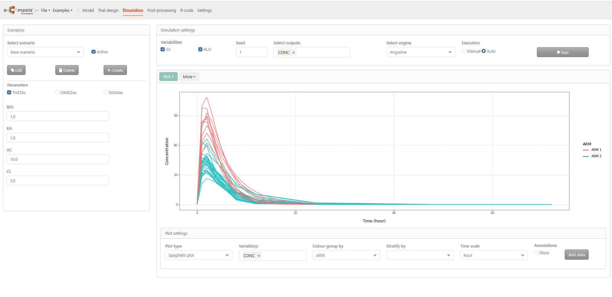
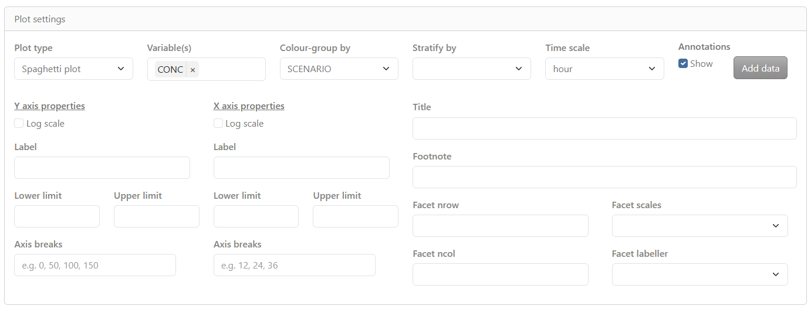
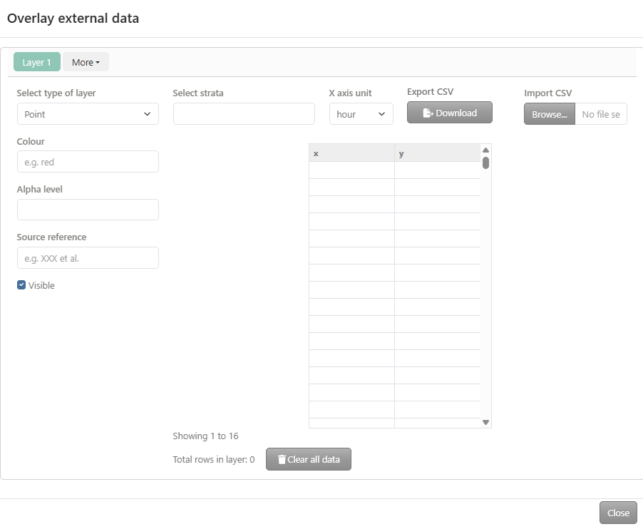

Chapter 4 Simulation tab
By clicking on the Simulation tab, the e‑campsis application displays an interactive environment to run simulations based on the defined model and trial design. This page is divided into three main areas:
- On the left, the Scenario and parameters section allows selection of simulation scenarios and modification of model parameters prior to execution.
- On the top right, the Simulation settings section is used to configure simulation options, including variability settings, random seed, selected outputs, simulation engine, and execution mode.
- On the bottom right, the Simulation output area displays the simulation results as plots, that can be customized through dedicated plot settings displayed below.

4.1 Scenarios settings
In the Scenarios section,available scenarios can be selected. A base scenario is shown as active, and scenarios can be created, edited, or deleted using the corresponding buttons.When scenarios are used, appropriate stratification or color grouping should be applied in the Plot settings to ensure correct visualization of the results.
Below, model parameters are displayed by category (e.g. THETAs, OMEGAs, SIGMAs). Parameters can be enabled or disabled, and their values can be modified prior to running the simulation.
4.2 Simulation settings
The Simulation settings section allows configuration of the simulation run:
- Variabilities: Inter‑individual (IIV) and residual variability (RUV)) can be enabled or disabled.When enabled, inter‑individual and residual variability are taken into account in the simulations. IMPORTANT: When simulating only one subject to obtain a typical profile, IIV should be disabled.
- Seed: a seed number can be specified.
- Select outputs: one or several output variables to be simulated (e.g. concentration) can be selected.
- Select engine: The simulation engine can be selected from the available simulation packages (rxode2 or mrgsolve).
- Execution: The execution mode can be set to Manual or Auto. When Manual mode is selected, the simulation is started by clicking the Run button. When Auto mode is selected, the simulation is executed automatically after each modification.
4.3 Plot settings
The Plot settings displays the simulation results as graphical outputs. By clicking More, additional plots can be added or existing plots removed.
In the example shown, a spaghetti plot of concentration versus time is displayed. Different colors represent different study arms, allowing comparison between arms. Individual subject profiles are shown as separate curves.

Below the plot, plot settings allow customization of the display, including:
Plot type: Three plot options can be chosen:
- Spaghetti plot: overlay of the individual profiles of the selected output(s) versus time
- Shaded plot: median of the simulated output(s) versus time with 5th and 95th percentiles of the simulations
- Scatter plot: relationship between two selected outputs,
Variables: one or several output variables can be selected.
Colour-group by: Profiles can be colored by ARM or SCENARIO or VARIABLE
Stratify-group by: Profiles can be splitted by ARM or SCENARIO or VARIABLE
Time scale: select the time unit (
second,minute,hour,day,week,month,yearcan be selected). Note one month correspond to 28 days.Annotation: By enabled Show, More annotation options allow to customize the plot
- Plot title
- X-axis label, limits, breaks
- Y-axis label, limits, breaks
- Footnote
- Horizontal/Vertical line(s): add one or several horizontal or vertical line(s) to the plot, and select colours and type
- Facet scales: scales for facet can be fixed, free, or free in one dimension
- Facet nrow: number of facets per row
- Facet scaled: include or not the facet variable name labels
4.4 Overlay external data
e‑Campsis provides a powerful interface for overlaying external data on simulated results. This feature can be useful to:
- Compare the simulated data with observed data or with summarized observed data (like median, percentiles, etc.)
- Display literature data (e.g. PK profiles from a publication or confidence intervals at some specific points of the profile, etc.) directly on plots.
- More generally, add custom ggplot layers to annotate plots (e.g. labels, text, lines, points, or crossbars).
By clicking on add data button, an overlay external data editor opens.

By clicking More, additional layers can be added or existing layers removed. For each layer the following can be defined:
- Select type of layer: the following types can be selected:
Point,Line,Horizontal line,Vertical line,Point range,Step,Error bar,Cross bar,TextandLabel. Based on your selection, the required column names (aesthetics in the ggplot2 terminology) will be displayed in the table and will have to be filled in with your data. - Select strata:
- ID: required when the external data refers to individuals.
- ARM: required when the simulation includes more than one arm.
- SCENARIO: required when multiple scenarios are defined.
- VARIABLE: required when multiple variables are present.
- x axis unit: correspond to the time unit of your data (
second,minute,hour,day,week,month,yearcan be selected). This is important to ensure that the data is correctly overlaid on the plot. - Table: Data can be entered or edited directly in the table. Content may also be copied and pasted from external sources such as Excel or CSV files.
- Export CSV: Exports the table content as a CSV file.
- Import CSV : Imports data by selecting a CSV file from a local computer. Note the CSV file must contain headers named
xandy(not time or conc); otherwise, the data will not be recognized. - Colour:
- Manual: in that case, specify the colour string to use (name or hex code).
- Colour-group based: the data will be coloured based on stratification variable used for colouring the plot.
- Alpha level: indicate the transparency level of the layer, a number between 0 and 1.
- Source reference: add a reference to the source of your data. This will be shown in the generated R code.
Once your data is entered and your layer is configured, click on the “Close” button to save the layer. The layer will be added to the plot.